5. PrimeFaces 组件库简介
5.1. Primefaces在JSF应用程序中的作用
让我们回到本文开头所探讨的 JSF 应用程序架构：
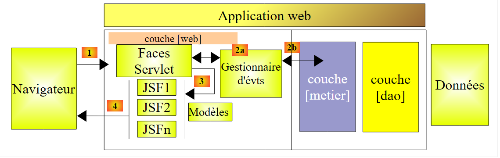 |
JSF 页面是利用三个标签库构建的：
- 第 2 行：命名空间 [http://java.sun.com/jsf/html] 中的 <h:x> 标签，对应于 HTML 中的标签，
- 第 3 行：命名空间 [http://java.sun.com/jsf/core] 中的 <f:y> 标签，对应于 JSF 标签，
- 第 4 行：命名空间 [http://java.sun.com/jsf/facelets] 中的 <ui:z> 标签，对应于 Facelets 标签。
为了构建 JSF 页面，我们将添加第四个标签库，即 Primefaces 组件的标签库。
- 第 3 行：命名空间 [http://primefaces.org/ui] 中的 <p:z> 标签对应于 Primefaces 组件。
这是唯一会显示的改动。因此它会出现在视图中。事件处理程序和模型仍与 JSF 中的保持一致。这一点非常重要。
借助 Primefaces 组件库中的丰富组件，并依托其原生支持的 AJAX 技术，可创建更友好、更流畅的 Web 界面。此类界面被称为富界面或 RIA（富互联网应用）。
之前的 JSF 架构将演变为以下 PF（Primefaces）架构：
 |
5.2. Primefaces的贡献
Primefaces 网站 [http://www.primefaces.org/showcase/ui/home.jsf] 列出了可在页面 PF 中使用的组件：
 |
在接下来的示例中，我们将使用 Primefaces 的前两个特性：
- 其中部分组件（Primefaces 提供的上百个组件中的一小部分），
- 以及这些组件的 AJAX 原生行为。
提供的组件包括：
 |  | 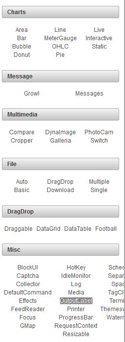 |
在我们的示例中，我们将仅使用其中约十五个，但这足以帮助您理解 Primefaces 页面构建的基本原理。
5.3. 学习 Primefaces
Primefaces 为每个组件都提供了使用示例。只需点击其链接即可。让我们看一个示例：
 |
- 在 [1] 中，是组件 [Spinner] 的示例，
- 在 [2] 中，是点击按钮 [Submit] 后显示的对话框。
这里有三个新内容：
- [Spinner]组件在JSF中原本并不存在，
- 对话框也是如此，
- 最后，由 [Submit] 触发的 POST 采用了 AJAX 技术。如果仔细观察 POST 执行时的浏览器状态，会发现没有出现沙漏图标。 页面并未重新加载，只是进行了修改：一个新组件（此处为对话框）出现在页面中。
让我们看看这一切是如何实现的。示例中的 XHTML 代码如下：
<h:form>
<p:panel header="Spinners">
<h:panelGrid id="grid" columns="2" cellpadding="5">
<h:outputLabel for="spinnerBasic" value="Basic Spinner: " />
<p:spinner id="spinnerBasic" value="#{spinnerController.number1}"/>
<h:outputLabel for="spinnerStep" value="Step Factor: " />
<p:spinner id="spinnerStep" value="#{spinnerController.number2}" stepFactor="0.25"/>
<h:outputLabel for="minmax" value="Min/Max: " />
<p:spinner id="minmax" value="#{spinnerController.number3}" min="0" max="100"/>
<h:outputLabel for="prefix" value="Prefix: " />
<p:spinner id="prefix" value="0" prefix="$" min="0" value="#{spinnerController.number4}"/>
<h:outputLabel for="ajaxspinner" value="Ajax Spinner: " />
<p:outputPanel>
<p:spinner id="ajaxspinner" value="#{spinnerController.number5}">
<p:ajax update="ajaxspinnervalue" process="@this" />
</p:spinner>
<h:outputText id="ajaxspinnervalue" value="#{spinnerController.number5}"/>
</p:outputPanel>
</h:panelGrid>
</p:panel>
<p:commandButton value="Submit" update="display" oncomplete="dialog.show()" />
<p:dialog header="Values" widgetVar="dialog" showEffect="fold" hideEffect="fold">
...
</p:dialog>
</h:form>
首先，我们注意到其中包含了一些经典的 JSF 标签：第 1 行的 <h:form>、第 3 行的 <h:panelGrid> 以及第 4 行的 <h:outputLabel>。 部分 JSF 标签被 PF 继承并进行了扩展：<p:commandButton> 第 21 行。 接着是用于格式设置的 PF 标签：<p:panel> 第 2 行，<p:outputPanel> 第 13 行，<p:dialog> 第 23 行。最后是输入标签：<p:spinner> 第 5 行。
让我们结合视图来分析这段代码：
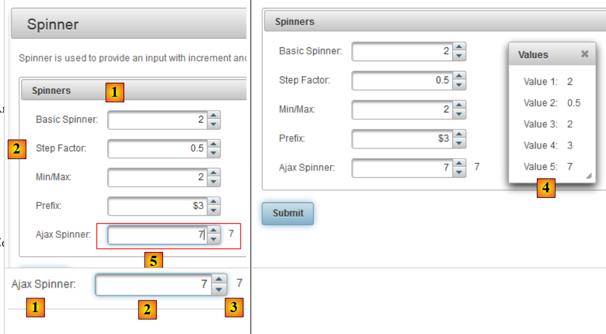 |
- 在 [1] 中，这是第 2 行 <p:panel> 标签生成的组件，
- 在 [2] 中，由第 6 行和第 7 行的 <p:outputLabel> 标签与 <p:spinner> 组合生成的输入字段，
- [3]，即第21行中通过<p:commandButton>标签生成的POST的按钮，
- 在 [4] 中，第 23-25 行的对话框，
- [5]，用于容纳两个组件的不可见容器。它由第13行的<p:outputPanel>标签创建。
让我们分析以下实现 AJAX 操作的代码：
<h:outputLabel for="ajaxspinner" value="Ajax Spinner: " />
<p:outputPanel>
<p:spinner id="ajaxspinner" value="#{spinnerController.number5}">
<p:ajax update="ajaxspinnervalue" process="@this" />
</p:spinner>
<h:outputText id="ajaxspinnervalue" value="#{spinnerController.number5}"/>
</p:outputPanel>
该代码生成以下视图：
 |
- 第 1 行：显示文本 [1]。同时也是 id=ajaxspinner 组件的标签（for 属性）。该组件即第 3 行中的组件（id 属性），
- 第 3-5 行：显示组件 [2]。该组件是与模板 #{spinnerController.number5} 关联的输入/显示组件（value 属性），
- 第 6 行：显示组件 [3]。该组件是与模板 #{spinnerController.number5} 关联的显示组件（value 属性），
- 第 4 行：<p:ajax> 标签为 AJAX 添加了行为。每当该组件的值发生变化时，就会向模型 #{spinnerController.number5} 模型。操作完成后，页面将进行更新（update 属性）。该属性的值为页面中某个组件的 ID，此处即第 6 行中的组件。update 属性的目标组件随后将根据模型进行更新。 该模型再次为 #{spinnerController.number5}，即 spinner 的值。因此，字段 [3] 会跟随字段 [2] 的输入内容。
这里出现了一个名为AJAX的行为，该缩写全称为Asynchronous Javascript And XML。通常情况下，AJAX行为的表现如下：
 |
- 浏览器显示一个包含 JavaScript 代码（J 代表 AJAX）的 HTML 页面。页面中的元素构成一个称为 DOM（文档对象模型）的 JavaScript 对象，
- 服务器托管了生成该页面的Web应用程序，
- 在 [1] 中，页面发生了一个事件。例如 spinner 的递增。该事件由 JavaScript 处理，
- 在 [2] 时，JavaScript 向 Web 应用程序发出 POST 请求。该操作以异步方式进行（即 AJAX 中的 A）。 用户可以继续操作该页面。页面不会被冻结，但如有必要，可以将其冻结。POST根据提交的值更新页面模板，此处为模板 #{spinnerController.number5}，
- 更新为 [3]，Web 应用程序将响应 XML（即 AJAX 中的 X）或 JSON （JavaScript 对象表示法），
- 在 [4] 中，JavaScript 使用此响应来更新 DOM 的特定区域，此处为 id=ajaxspinnervalue 的区域。
当使用 JSF 和 Primefaces 时，JavaScript 由 Primefaces 生成。该库基于 JavaScript 库 JQuery。 同样，Primefaces组件也依赖于JQuery和UI（用户界面）组件库中的组件。因此，JQuery是Primefaces的基础。
让我们回到我们的示例，现在介绍按钮 [Submit] 对应的 POST：
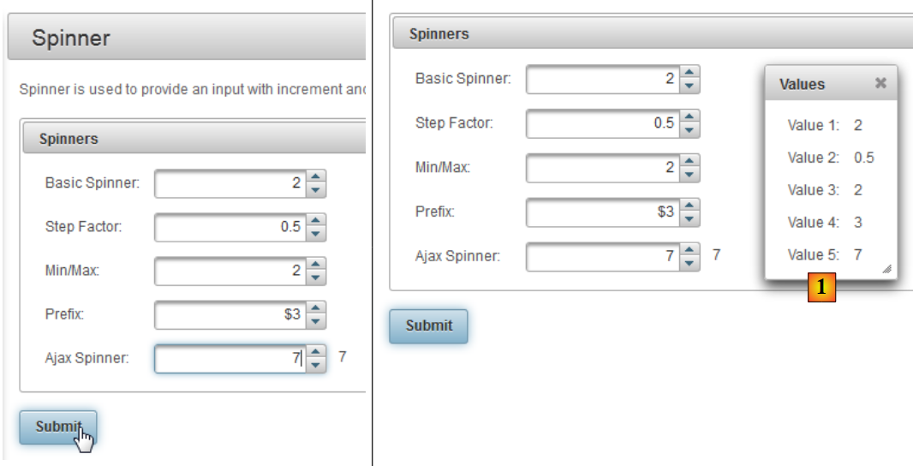 |
与 POST 关联的代码如下：
<p:commandButton value="Submit" update="display" oncomplete="dialog.show()" />
<p:dialog header="Values" widgetVar="dialog" showEffect="fold" hideEffect="fold">
<h:panelGrid id="display" columns="2" cellpadding="5">
<h:outputText value="Value 1: " />
<h:outputText value="#{spinnerController.number1}" />
<h:outputText value="Value 2: " />
<h:outputText value="#{spinnerController.number2}" />
<h:outputText value="Value 3: " />
<h:outputText value="#{spinnerController.number3}" />
<h:outputText value="Value 4: " />
<h:outputText value="#{spinnerController.number4}" />
<h:outputText value="Value 5: " />
<h:outputText value="#{spinnerController.number5}" />
</h:panelGrid>
</p:dialog>
</h:form>
- 第 1 行：POST 由第 1 行的按钮触发。在 Primefaces 中，触发 POST 的标签默认会以 AJAX 的形式进行调用。 因此，这些标签具有一个 update 属性，用于指定在收到服务器响应后需要更新的字段。在此处，被更新的字段是第 4 行中的 panelGrid。因此，当 POST 返回时，该字段将通过提交到模型的值进行更新。 然而，这些数据默认位于一个不可见的对话框中。第1行的oncomplete属性负责将其显示出来。该事件发生在处理完POST之后。 该属性的值是 JavaScript 代码。此处显示的是 id=dialog 的对话框，即第 3 行（widgetVar 属性）中的对话框，
- 第3行：可以看到对话框的各种属性。需要通过实践来了解它们的功能。
我们之前提到了该模板，但尚未展示。它就是这个：
通常，我们可以按以下步骤操作：
- 找到想要使用的 Primefaces 组件，
- 研究其示例。Primefaces的示例设计精良且易于理解。
5.4. 首个 Primefaces 项目：mv-pf-01
使用 NetBeans 构建一个 Maven Web 项目：
 |
- [1, 2, 3]：构建一个类型为 [Web Application] 的 Maven 项目，
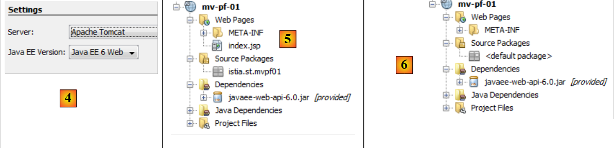 |
- [4]：服务器将使用 Tomcat，
- 在 [5] 中，生成的项目
- 在 [6] 中，将其从 [index.jsp] 文件和 Java 包中清理出来，
 |
- 在 [7, 8] 中：在项目属性中，添加对 Java Server Faces 的支持，
 |
- ，在 [Components] 选项卡中选择 PrimeFaces 组件库。 NetBeans 还支持其他组件库：ICEFaces 和 RichFaces。
- 在 [10] 中，即生成的项目。在 [11] 中，请注意对 Primefaces 的依赖。
简而言之，一个 Primefaces 项目就是经典的 JSF 项目，只是额外添加了对 Primefaces 的依赖。仅此而已。
理解这一点后，我们修改 [pom.xml] 文件以适配最新版本的库：
<dependency>
<groupId>com.sun.faces</groupId>
<artifactId>jsf-impl</artifactId>
<version>2.1.8</version>
<scope>compile</scope>
</dependency>
<dependency>
<groupId>org.primefaces</groupId>
<artifactId>primefaces</artifactId>
<version>3.3</version>
<scope>compile</scope>
</dependency>
<dependency>
<groupId>javax</groupId>
<artifactId>javaee-web-api</artifactId>
<version>6.0</version>
<scope>provided</scope>
</dependency>
</dependencies>
<repositories>
<repository>
<id>jsf20</id>
<name>Repository for library Library[jsf20]</name>
<url>http://download.java.net/maven/2/</url>
</repository>
<repository>
<id>primefaces</id>
<name>Repository for library Library[primefaces]</name>
<url>http://repository.primefaces.org/</url>
</repository>
</repositories>
第 26-30 行，请注意 Primefaces 的 Maven 仓库。完成这些修改后，构建项目以启动依赖项的下载。随后我们将得到 [12] 项目。
现在，让我们尝试重现之前学习的示例。[index.html] 页面将变为如下所示：
<?xml version='1.0' encoding='UTF-8' ?>
<!DOCTYPE html PUBLIC "-//W3C//DTD XHTML 1.0 Transitional//EN" "http://www.w3.org/TR/xhtml1/DTD/xhtml1-transitional.dtd">
<html xmlns="http://www.w3.org/1999/xhtml"
xmlns:h="http://java.sun.com/jsf/html"
xmlns:p="http://primefaces.org/ui"
xmlns:f="http://java.sun.com/jsf/core"
xmlns:ui="http://java.sun.com/jsf/facelets">
<h:head>
<title>Spinner</title>
</h:head>
<h:body>
<!-- 表单 -->
<h:form>
<p:panel header="Spinners">
<h:panelGrid id="grid" columns="2" cellpadding="5">
<h:outputLabel for="spinnerBasic" value="Basic Spinner: " />
<p:spinner id="spinnerBasic" value="#{spinnerController.number1}"/>
<h:outputLabel for="spinnerStep" value="Step Factor: " />
<p:spinner id="spinnerStep" value="#{spinnerController.number2}" stepFactor="0.25"/>
<h:outputLabel for="minmax" value="Min/Max: " />
<p:spinner id="minmax" value="#{spinnerController.number3}" min="0" max="100"/>
<h:outputLabel for="prefix" value="Prefix: " />
<p:spinner id="prefix" prefix="$" min="0" value="#{spinnerController.number4}"/>
<h:outputLabel for="ajaxspinner" value="Ajax Spinner: " />
<p:outputPanel>
<p:spinner id="ajaxspinner" value="#{spinnerController.number5}">
<p:ajax update="ajaxspinnervalue" process="@this" />
</p:spinner>
<h:outputText id="ajaxspinnervalue" value="#{spinnerController.number5}"/>
</p:outputPanel>
</h:panelGrid>
</p:panel>
<p:commandButton value="Submit" update="display" oncomplete="dialog.show()" />
<!-- 对话框 -->
<p:dialog header="Values" widgetVar="dialog" showEffect="fold" hideEffect="fold">
<h:panelGrid id="display" columns="2" cellpadding="5">
<h:outputText value="Value 1: " />
<h:outputText value="#{spinnerController.number1}" />
<h:outputText value="Value 2: " />
<h:outputText value="#{spinnerController.number2}" />
<h:outputText value="Value 3: " />
<h:outputText value="#{spinnerController.number3}" />
<h:outputText value="Value 4: " />
<h:outputText value="#{spinnerController.number4}" />
<h:outputText value="Value 5: " />
<h:outputText value="#{spinnerController.number5}" />
</h:panelGrid>
</p:dialog>
</h:form>
</h:body>
</html>
请注意第 5 行，该行声明了 Primefaces 标签库的命名空间。我们将作为页面模板的 Bean 添加到项目中：
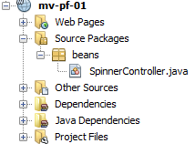 |
该 Bean 内容如下：
package beans;
import javax.faces.bean.RequestScoped;
import javax.faces.bean.ManagedBean;
@ManagedBean
@RequestScoped
public class SpinnerController {
// 模板
private int number1;
private double number2;
private int number3;
private int number4;
private int number5;
// 获取器和设置器
...
}
该类是一个请求作用域（第7行）的Bean（第6行）。由于未指定名称，该Bean采用类名首字母小写的命名方式：spinnerController。
运行该项目时，将得到以下结果：
 |
至此，我们已经演示了如何测试Primefaces网站上的一个示例。所有示例均可通过此方式进行测试。
接下来，我们将重点关注 Primefaces 的某些组件。首先，我们将重新使用 JSF 分析过的示例，并将其中某些 JSF 标签替换为 Primefaces 标签。 页面外观将略有变化，它们将呈现 AJAX 的行为，但相关的 Bean 无需更改。 在接下来的每个示例中，我们仅展示页面的 XHTML 代码及相应的屏幕截图。建议读者亲自测试这些示例，以发现 JSF 页面与 PF 页面之间的差异。
5.5. 示例 mv-pf-02：事件管理器 – 国际化 – 页面间导航
本项目是 JSF [mv-jsf2-02] 项目的移植（第 2.4 节，第 41 页）：
 | 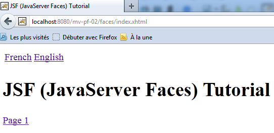 |
NetBeans 项目如下：
 |
页面 [index.html] 如下所示：
<?xml version='1.0' encoding='UTF-8' ?>
<!DOCTYPE html PUBLIC "-//W3C//DTD XHTML 1.0 Transitional//EN" "http://www.w3.org/TR/xhtml1/DTD/xhtml1-transitional.dtd">
<html xmlns="http://www.w3.org/1999/xhtml"
xmlns:h="http://java.sun.com/jsf/html"
xmlns:p="http://primefaces.org/ui"
xmlns:f="http://java.sun.com/jsf/core"
xmlns:ui="http://java.sun.com/jsf/facelets">
<f:view locale="#{changeLocale.locale}">
<h:head>
<title><h:outputText value="#{msg['welcome.titre']}" /></title>
</h:head>
<body>
<h:form id="formulaire">
<h:panelGrid columns="2">
<p:commandLink value="#{msg['welcome.langue1']}" action="#{changeLocale.setFrenchLocale}" ajax="false"/>
<p:commandLink value="#{msg['welcome.langue2']}" action="#{changeLocale.setEnglishLocale}" ajax="false"/>
</h:panelGrid>
<h1><h:outputText value="#{msg['welcome.titre']}" /></h1>
<p:commandLink value="#{msg['welcome.page1']}" action="page1" ajax="false"/>
</h:form>
</body>
</f:view>
</html>
在第 15、16 和 19 行，<h:commandLink> 标签已被替换为 <p:commandLink> 标签。 该标签默认行为为 AJAX，可通过设置 ajax="false" 属性来禁用。 因此，此处的 <p:commandLink> 标签表现得如同 <h:commandLink> 标签：点击这些链接时，页面将重新加载。
5.6. 示例 mv-pf-03：使用 Facelets 进行页面布局
本项目演示了如何利用示例 [mv-jsf2-09]（第 2.11 节）中的 Facelets 模板创建页面 XHTML：
 |
NetBeans 项目如下：
 |
- 在 [1] 中，项目配置文件 JSF，
- 在 [2] 中，页面文件位于 XHTML，
- [3] 中的语言切换支持 Bean，
- [4] 中的消息文件，
- [5]，依赖项。
该项目的页面以页面 [layout.xhtml] 为模板：
<?xml version='1.0' encoding='UTF-8' ?>
<!DOCTYPE html PUBLIC "-//W3C//DTD XHTML 1.0 Transitional//EN" "http://www.w3.org/TR/xhtml1/DTD/xhtml1-transitional.dtd">
<html xmlns="http://www.w3.org/1999/xhtml"
xmlns:h="http://java.sun.com/jsf/html"
xmlns:p="http://primefaces.org/ui"
xmlns:f="http://java.sun.com/jsf/core"
xmlns:ui="http://java.sun.com/jsf/facelets">
<f:view locale="#{changeLocale.locale}">
<h:head>
<title>JSF</title>
<h:outputStylesheet library="css" name="styles.css"/>
</h:head>
<h:body style="background-image: url('${request.contextPath}/resources/images/standard.jpg');">
<h:form id="formulaire">
<table style="width: 600px">
<tr>
<td colspan="2" bgcolor="#ccccff">
<ui:include src="entete.xhtml"/>
</td>
</tr>
<tr>
<td style="width: 100px; height: 200px" bgcolor="#ffcccc">
<ui:include src="menu.xhtml"/>
</td>
<td>
<p:outputPanel id="contenu">
<ui:insert name="contenu" >
<h2>Contenu</h2>
</ui:insert>
</p:outputPanel>
</td>
</tr>
<tr bgcolor="#ffcc66">
<td colspan="2">
<ui:include src="basdepage.xhtml"/>
</td>
</tr>
</table>
</h:form>
</h:body>
</f:view>
</html>
- 第 9 行：一个 <f:view> 标签包裹了整个页面，以便利用其提供的国际化功能，
- 第15行：一个表单ID为id的表单。该表单构成页面的主体。在主体中，仅第28-30行属于动态部分。页面中的可变内容将插入在此处：
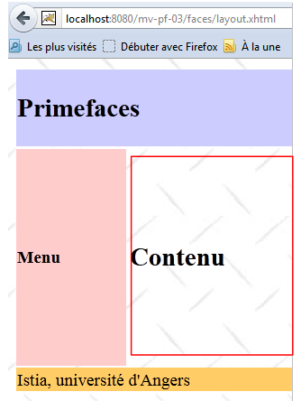 |
- 上文框选区域将通过调用 AJAX 进行更新。为了对其进行标识，我们将其包含在由 <p:outputPanel> 标签生成的 Primefaces 容器中（第 27 行）。 该容器的名称为“contenu”（id属性）。由于它位于名为“formulaire”的表单容器中，因此该动态区域的完整名称为：formulaire:contenu。第一个冒号（:）表示从文档根目录开始，然后进入名为“formulaire”的容器，再进入名为“contenu”的容器。 使用 AJAX 时的一个难点在于，如何正确命名需要通过调用 AJAX 进行更新的字段。最简单的方法是查看生成的 HTML 页面的源代码：
上文可见，标签 <h:outputPanel> 生成了标签 HTML <span>。在此示例中，相对名称 formulaire:contenu（不含开头的 :）和完整名称 :formulaire:contenu（含开头的 :）指向同一个对象。
需要注意的是，用于更新动态区域的 AJAX 调用（<p:commandButton>、<p:commandLink>）将具有 update=":formulaire:contenu" 属性。
页面 [index.xhtml] 是该项目显示的唯一页面：
<?xml version='1.0' encoding='UTF-8' ?>
<!DOCTYPE html PUBLIC "-//W3C//DTD XHTML 1.0 Transitional//EN" "http://www.w3.org/TR/xhtml1/DTD/xhtml1-transitional.dtd">
<html xmlns="http://www.w3.org/1999/xhtml"
xmlns:h="http://java.sun.com/jsf/html"
xmlns:p="http://primefaces.org/ui"
xmlns:f="http://java.sun.com/jsf/core"
xmlns:ui="http://java.sun.com/jsf/facelets">
<ui:composition template="layout.xhtml">
<ui:define name="contenu">
<ui:fragment rendered="#{requestScope.page1 || requestScope.page2==null}">
<ui:include src="page1.xhtml"/>
</ui:fragment>
<ui:fragment rendered="#{requestScope.page2}">
<ui:include src="page2.xhtml"/>
</ui:fragment>
</ui:define>
</ui:composition>
</html>
- 第 8 行，[index.xhtml] 的模板是刚才介绍的 [layout.xhtml] 页面，
- 第9行，这是由[index.html]更新的内容ID区域。该区域包含两个片段：
- 第11行的片段[page1.xhtml]；
- 第 14 行的片段 [page2.xhtml]。
这两个片段互斥。
- 第10行：如果请求的page1属性为true，或者page2属性不存在，则显示片段[page1.xhtml]。这适用于第一个请求，因为该请求中不会包含上述任何属性。 在这种情况下，将显示片段 [page1.xhtml]，
- 第 11 行，若请求的 page2 属性为 true，则显示片段 [page2.xhtml]
片段 [page1.xhtml] 如下所示：
<?xml version='1.0' encoding='UTF-8' ?>
<!DOCTYPE html PUBLIC "-//W3C//DTD XHTML 1.0 Transitional//EN" "http://www.w3.org/TR/xhtml1/DTD/xhtml1-transitional.dtd">
<html xmlns="http://www.w3.org/1999/xhtml"
xmlns:h="http://java.sun.com/jsf/html"
xmlns:p="http://primefaces.org/ui"
xmlns:f="http://java.sun.com/jsf/core"
xmlns:ui="http://java.sun.com/jsf/facelets">
<body>
<h:panelGrid columns="2">
<p:commandLink value="#{msg['page1.langue1']}" actionListener="#{changeLocale.setFrenchLocale}" ajax="true" update=":formulaire:contenu"/>
<p:commandLink value="#{msg['page1.langue2']}" actionListener="#{changeLocale.setEnglishLocale}" ajax="true" update=":formulaire:contenu"/>
</h:panelGrid>
<h1><h:outputText value="#{msg['page1.titre']}" /></h1>
<p:commandLink value="#{msg['page1.lien']}" update=":formulaire:contenu">
<f:setPropertyActionListener value="#{true}" target="#{requestScope.page2}" />
</p:commandLink>
</body>
</html>
并显示以下内容：
 |
- 第 11 和 12 行，这两个用于切换语言的链接。这两个链接会触发 AJAX（ajax=true）的调用。这是默认值。因此，我们可以不设置 ajax=true 属性。 后续我们将不再使用该属性。需要注意的是，这两个链接会更新 :form:content 区域（update 属性），即上文框选的部分，
- 第15行：一个导航链接 AJAX，它同样会更新 :formulaire:contenu 区域，
- 第16行：使用<h:setPropertyActionListener>标签，将page2属性（值为true）加入请求中。 这将导致在页面 [index.xhtml] 中显示片段 [page2.xhtml]（下文第 6 行）：
<ui:composition template="layout.xhtml">
<ui:define name="contenu">
<ui:fragment rendered="#{requestScope.page1 || requestScope.page2==null}">
<ui:include src="page1.xhtml"/>
</ui:fragment>
<ui:fragment rendered="#{requestScope.page2}">
<ui:include src="page2.xhtml"/>
</ui:fragment>
</ui:define>
</ui:composition>
片段 [page2.xhtml] 的情况类似：
 |
[page2.xhtml] 的代码如下：
<?xml version='1.0' encoding='UTF-8' ?>
<!DOCTYPE html PUBLIC "-//W3C//DTD XHTML 1.0 Transitional//EN" "http://www.w3.org/TR/xhtml1/DTD/xhtml1-transitional.dtd">
<html xmlns="http://www.w3.org/1999/xhtml"
xmlns:h="http://java.sun.com/jsf/html"
xmlns:p="http://primefaces.org/ui"
xmlns:f="http://java.sun.com/jsf/core"
xmlns:ui="http://java.sun.com/jsf/facelets">
<body>
<h1><h:outputText value="#{msg['page2.entete']}"/></h1>
<p:commandLink value="#{msg['page2.lien']}" update=":formulaire:contenu">
<f:setPropertyActionListener value="#{true}" target="#{requestScope.page1}" />
</p:commandLink>
</body>
</html>
从这个示例中，我们将记住以下几点以备后续使用：
- 我们将使用 [layout.xhtml] 作为页面模板，
- 动态区域将通过 id:form:content 标识，并通过调用 AJAX 进行更新。
5.7. 示例 mv-pf-04：数据录入表单
本项目是 JSF2 和 [mv-jsf2-03] 项目的移植（参见第 2.5 节）：
 |
NetBeans 项目如下：
 |
上图所示为 [1] 中的项目页面 XHTML。页面布局由之前研究过的模板 [layout.xhtml] 负责。 页面 [index.xhtml] 是该项目的唯一页面。它显示在 :formulaire:contenu 区域中。其代码如下：
<?xml version='1.0' encoding='UTF-8' ?>
<!DOCTYPE html PUBLIC "-//W3C//DTD XHTML 1.0 Transitional//EN" "http://www.w3.org/TR/xhtml1/DTD/xhtml1-transitional.dtd">
<html xmlns="http://www.w3.org/1999/xhtml"
xmlns:h="http://java.sun.com/jsf/html"
xmlns:p="http://primefaces.org/ui"
xmlns:f="http://java.sun.com/jsf/core"
xmlns:ui="http://java.sun.com/jsf/facelets">
<ui:composition template="layout.xhtml">
<ui:define name="contenu">
<ui:include src="page1.xhtml"/>
</ui:define>
</ui:composition>
</html>
该页面仅负责显示片段 [page1.xhtml]。该片段与示例 [mv-jsf2-03] 中研究的表单功能等同。 需要提醒的是，该表单原本旨在展示 JSF 输入标签。此处这些标签已被 Primefaces 标签所取代。
PanelGrid
为了对 [page1.xhtml] 中的元素进行格式化，我们使用 <p:panelGrid> 标签。例如，对于两个语言链接：
<!-- 语言 -->
<p:panelGrid columns="2">
<p:commandLink value="#{msg['form.langue1']}" actionListener="#{changeLocale.setFrenchLocale}" update=":formulaire:contenu"/>
<p:commandLink value="#{msg['form.langue2']}" actionListener="#{changeLocale.setEnglishLocale}" update=":formulaire:contenu"/>
</p:panelGrid>
渲染效果如下：
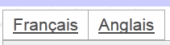 |
标签 <p:panelGrid> 的另一种形式如下：
<p:panelGrid>
<f:facet name="header">
<p:row>
<p:column colspan="3"><h:outputText value="#{msg['form.titre']}"/></p:column>
</p:row>
<p:row>
<p:column><h:outputText value="#{msg['form.headerCol1']}"/></p:column>
<p:column><h:outputText value="#{msg['form.headerCol2']}"/></p:column>
<p:column><h:outputText value="#{msg['form.headerCol3']}"/></p:column>
</p:row>
</f:facet>
<p:row>
<p:column>
<h:outputText value="inputText"/>
</p:column>
<p:column>
<h:outputLabel for="inputText" value="#{msg['form.loginPrompt']}" />
<p:inputText id="inputText" value="#{form.inputText}"/>
</p:column>
<p:column>
<h:outputText id="inputTextValue" value="#{form.inputText}"/>
</p:column>
</p:row>
...
<f:facet name="footer">
<p:row>
<p:column colspan="3">
<div align="center">
<p:commandButton value="#{msg['form.submitText']}" update=":formulaire:contenu"/>
</div>
</p:column>
</p:row>
</f:facet>
</p:panelGrid>
表格的行和列由 <p:row> 和 <p:column> 标签标识。
第 3-12 行定义了表格的表头：
第 14-25 行定义了表格的一行：
第 27-35 行定义了表格的页脚：
inputText
<p:row>
<p:column>
<h:outputText value="inputText"/>
</p:column>
<p:column>
<h:outputLabel for="inputText" value="#{msg['form.loginPrompt']}" />
<p:inputText id="inputText" value="#{form.inputText}"/>
</p:column>
<p:column>
<h:outputText id="inputTextValue" value="#{form.inputText}"/>
</p:column>
</p:row>
密码
<p:row>
<p:column>
<h:outputText value="inputSecret"/>
</p:column>
<p:column>
<h:outputLabel for="inputSecret" value="#{msg['form.passwdPrompt']}"/>
<p:password id="inputSecret" value="#{form.inputSecret}" feedback="true"
promptLabel="#{msg['form.promptLabel']}" weakLabel="#{msg['form.weakLabel']}"
goodLabel="#{msg['form.goodLabel']}" strongLabel="#{msg['form.strongLabel']}" />
</p:column>
<p:column>
<h:outputText id="inputSecretValue" value="#{form.inputSecret}"/>
</p:column>
</p:row>
 |
第7行，feedback=true 属性可提供密码质量反馈。
inputTextArea
<p:row>
<p:column>
<h:outputText value="inputTextArea"/>
</p:column>
<p:column>
<h:outputLabel for="inputTextArea" value="#{msg['form.descPrompt']}"/>
<p:editor id="inputTextArea" value="#{form.inputTextArea}" rows="4"/>
</p:column>
<p:column>
<h:outputText id="inputTextAreaValue" value="#{form.inputTextArea}"/>
</p:column>
</p:row>
 |
第 7 行，<p:editor> 标签显示了一个富文本编辑器，用于对文本进行格式设置（字体、大小、颜色、对齐方式等）。发送到服务器的内容是所输入文本的代码 HTML。
selectOneListBox
<p:row>
<p:column>
<h:outputText value="selectOneListBox"/>
</p:column>
<p:column>
<h:outputLabel for="selectOneListBox1" value="#{msg['form.selectOneListBox1Prompt']}"/>
<p:selectOneListbox id="selectOneListBox1" value="#{form.selectOneListBox1}">
<f:selectItem itemValue="1" itemLabel="un"/>
<f:selectItem itemValue="2" itemLabel="deux"/>
<f:selectItem itemValue="3" itemLabel="trois"/>
</p:selectOneListbox>
</p:column>
<p:column>
<h:outputText id="selectOneListBox1Value" value="#{form.selectOneListBox1}"/>
</p:column>
</p:row>
 |
selectOneMenu
<p:row>
<p:column>
<h:outputText value="selectOneMenu"/>
</p:column>
<p:column>
<h:outputLabel for="selectOneMenu" value="#{msg['form.selectOneMenuPrompt']}"/>
<p:selectOneMenu id="selectOneMenu" value="#{form.selectOneMenu}">
<f:selectItem itemValue="1" itemLabel="un"/>
<f:selectItem itemValue="2" itemLabel="deux"/>
<f:selectItem itemValue="3" itemLabel="trois"/>
<f:selectItem itemValue="4" itemLabel="quatre"/>
<f:selectItem itemValue="5" itemLabel="cinq"/>
</p:selectOneMenu>
</p:column>
<p:column>
<h:outputText id="selectOneMenuValue" value="#{form.selectOneMenu}"/>
</p:column>
</p:row>
 |
selectManyMenu
<p:row>
<p:column>
<h:outputText value="selectManyMenu"/>
</p:column>
<p:column>
<h:outputLabel for="selectManyMenu" value="#{msg['form.selectManyMenuPrompt']}"/>
<p:selectManyMenu id="selectManyMenu" value="#{form.selectManyMenu}" >
<f:selectItem itemValue="1" itemLabel="un"/>
<f:selectItem itemValue="2" itemLabel="deux"/>
<f:selectItem itemValue="3" itemLabel="trois"/>
<f:selectItem itemValue="4" itemLabel="quatre"/>
<f:selectItem itemValue="5" itemLabel="cinq"/>
</p:selectManyMenu>
<p:commandLink value="#{msg['form.buttonRazText']}" actionListener="#{form.clearSelectManyMenu()}" update=":formulaire:selectManyMenu" style="margin-left: 10px"/>
</p:column>
<p:column>
<h:outputText id="selectManyMenuValue" value="#{form.selectManyMenuValue}"/>
</p:column>
</p:row>
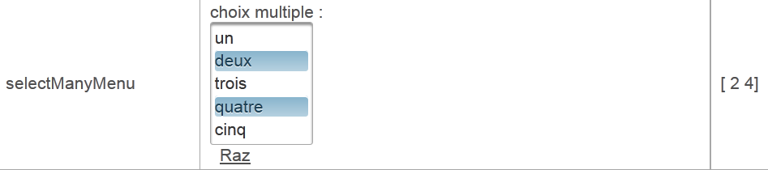 |
第 14 行，请注意链接 [Raz] 对字段 :formulaire:selectManyMenu 进行了更新，该字段对应第 6 行的组件。 不过需要注意的是，在 POST 到 AJAX 的更新过程中，表单中的所有值都会被提交。因此，整个模板都会被更新。但使用此模板时，仅更新 :form:selectManyMenu 字段。
selectBooleanCheckbox
<p:row>
<p:column>
<h:outputText value="selectBooleanCheckbox"/>
</p:column>
<p:column>
<h:outputLabel for="selectBooleanCheckbox" value="#{msg['form.selectBooleanCheckboxPrompt']}"/>
<p:selectBooleanCheckbox id="selectBooleanCheckbox" value="#{form.selectBooleanCheckbox}"/>
</p:column>
<p:column>
<h:outputText id="selectBooleanCheckboxValue" value="#{form.selectBooleanCheckbox}"/>
</p:column>
</p:row>
selectManyCheckbox
<p:row>
<p:column>
<h:outputText value="selectManyCheckbox"/>
</p:column>
<p:column>
<h:outputLabel for="selectManyCheckbox" value="#{msg['form.selectManyCheckboxPrompt']}"/>
<p:selectManyCheckbox id="selectManyCheckbox" value="#{form.selectManyCheckbox}">
<f:selectItem itemValue="1" itemLabel="rouge"/>
<f:selectItem itemValue="2" itemLabel="bleu"/>
<f:selectItem itemValue="3" itemLabel="blanc"/>
<f:selectItem itemValue="4" itemLabel="noir"/>
</p:selectManyCheckbox>
</p:column>
<p:column>
<h:outputText id="selectManyCheckboxValue" value="#{form.selectManyCheckboxValue}"/>
</p:column>
</p:row>
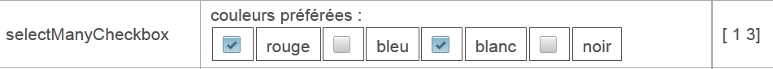 |
selectOneRadio
<p:row>
<p:column>
<h:outputText value="selectOneRadio"/>
</p:column>
<p:column>
<h:outputLabel for="selectOneRadio" value="#{msg['form.selectOneRadioPrompt']}"/>
<p:selectOneRadio id="selectOneRadio" value="#{form.selectOneRadio}" >
<f:selectItem itemValue="1" itemLabel="voiture"/>
<f:selectItem itemValue="2" itemLabel="vélo"/>
<f:selectItem itemValue="3" itemLabel="scooter"/>
<f:selectItem itemValue="4" itemLabel="marche"/>
</p:selectOneRadio>
</p:column>
<p:column>
<h:outputText id="selectOneRadioValue" value="#{form.selectOneRadio}"/>
</p:column>
</p:row>
5.8. 示例：mv-pf-05：动态列表
该项目是 JSF2 [mv-jsf2-04] 项目的移植（参见第 2.6 节）：

该项目相较于前一个项目并未引入新的 Primefaces 标签。因此我们不再赘述。该项目属于文档网站上向读者提供的示例列表的一部分。
5.9. 示例：mv-pf-06：导航 – 会话 – 异常处理
该项目是项目 JSF2 [mv-jsf2-05]（参见第 2.7 节）的移植版本：
 |
同样，此示例并未引入新的 Primefaces 标签。我们仅对上文框选的链接表进行说明：
<p:panelGrid columns="6">
<p:commandLink value="1" action="form1?faces-redirect=true" ajax="false"/>
<p:commandLink value="2" action="#{form.doAction2}" ajax="false"/>
<p:commandLink value="3" action="form3?faces-redirect=true" ajax="false"/>
<p:commandLink value="4" action="#{form.doAction4}" ajax="false"/>
<p:commandLink value="#{msg['form.pagealeatoireLink']}" action="#{form.doAlea}" ajax="false"/>
<p:commandLink value="#{msg['form.exceptionLink']}" action="#{form.throwException}" ajax="false"/>
</p:panelGrid>
- 所有链接都带有 ajax=false 属性。因此页面加载是正常的，
- 请注意第 2 行和第 4 行，这是实现重定向的方式。
5.10. 示例：mv-pf-07：输入数据的验证与转换
该项目是 JSF2 [mv-jsf2-06] 项目的移植（参见第 2.8 节）：

该应用程序引入了两个新标签，即 <p:messages> 标签：
<p:messages globalOnly="true"/>

以及 <p:message> 标签：
<p:inputText id="saisie1" value="#{form.saisie1}" styleClass="saisie"/>
<p:message for="saisie1" styleClass="error"/>
与 JSF 的 <h:message> 标签相比，PF 的 <p:message> 标签带来了以下变化：
- 错误消息的外观有所不同 [1]，
- 输入错误的区域被红色边框包围（[2]）。
5.11. 示例：mv-pf-08：与组件状态变化相关的事件
该项目是 JSF2 和 [mv-jsf2-07] 项目的移植（参见第 2.9 节）：
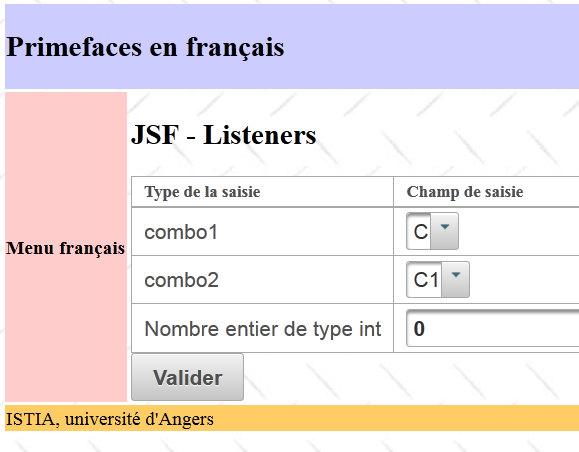
项目 JSF 引入了 listeners 的概念。listener 在 Primefaces 中的管理方式有所不同。
关于 JSF：
使用 Primefaces：
- 第 2 行：<h:selectOneMenu> 标签未包含 valueChangeListener 属性，
- 第 4 行：<p:ajax> 标签为其父标签 <h:selectOneMenu> 添加了 AJAX 行为。默认情况下，它响应列表 combo1 的“值变化”事件。 在此事件触发时，该标签所属表单的值将通过调用 AJAX 提交至服务器。因此模型被更新。我们使用该新模型来更新由 combo2 标识的下拉列表（第 10 行）。 请注意，第 4 行中，调用 AJAX 并未执行模型的方法。此处无需执行该操作。我们仅需通过 POST 将模型更新为已输入的值。
5.12. 示例：mv-pf-09：辅助输入
该项目提供了Primefaces专用的输入控件，可简化某些类型数据的输入：
 |
5.12.1. NetBeans 项目
NetBeans 项目如下：
 |
该项目的亮点在于：
- 该项目显示的唯一页面 [index.html]，
- 以及该页面的模板 [Form.java]。
5.12.2. 该表单
该表单包含四个与以下模板关联的输入字段：
package forms;
import java.io.Serializable;
import java.util.ArrayList;
import java.util.Date;
import java.util.List;
import javax.faces.bean.RequestScoped;
import javax.faces.bean.ManagedBean;
@ManagedBean
@SessionScoped
public class Form implements Serializable {
private Date calendrier;
private Integer slider = 100;
private Integer spinner = 1;
private String autocompleteValue;
public Form() {
}
public List<String> autocomplete(String query) {
...
}
// getter 和 setter
...
}
这四个输入项分别对应第14至17行的字段。
5.12.3. 表单
表单如下：
<?xml version='1.0' encoding='UTF-8' ?>
<html xmlns="http://www.w3.org/1999/xhtml"
xmlns:h="http://java.sun.com/jsf/html"
xmlns:p="http://primefaces.org/ui"
xmlns:f="http://java.sun.com/jsf/core"
xmlns:ui="http://java.sun.com/jsf/facelets">
<ui:composition template="layout.xhtml">
<ui:define name="contenu">
<h2><h:outputText value="#{msg['app.titre']}"/></h2>
<p:growl id="messages" autoUpdate="true"/>
<p:panelGrid columns="3" columnClasses="col1,col2,col3,col4">
<h:outputText value="#{msg['saisie.type']}" styleClass="entete"/>
<h:outputText value="#{msg['saisie.champ']}" styleClass="entete"/>
<h:outputText value="#{msg['bean.valeur']}" styleClass="entete"/>
<!-- 日历 -->
...
<!-- 滑块 -->
...
<!-- 加载图标 -->
...
<!-- 自动完成 -->
...
</p:panelGrid>
</ui:define>
</ui:composition>
</html>
让我们来看看这四个输入字段。
5.12.4. 日历
<p:calendar> 标签允许用户从日历中选择日期。该标签支持多种属性。
<h:outputText value="#{msg['calendar.prompt']}"/>
<p:calendar id="calendrier" value="#{form.calendrier}" pattern="dd/MM/yyyy" timeZone="Europe/Paris"/>
<h:outputText id="calendrierValue" value="#{form.calendrier}">
<f:convertDateTime pattern="dd/MM/yyyy" type="date" timeZone="Europe/Paris"/>
</h:outputText>
第 2 行指定日期应以“日/月/年”格式显示，时区为巴黎时区。当光标置于输入框中时，会显示一个日历：
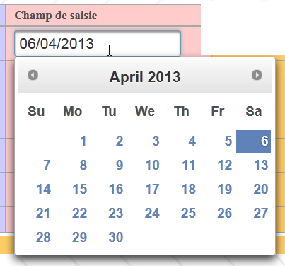 |
5.12.5. 滑块
<p:slider> 标签允许通过沿滑块拖动光标来输入整数：
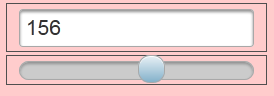 |
该标签的代码如下：
<h:outputText value="#{msg['slider.prompt']}"/>
<h:panelGrid columns="1" style="margin-bottom:10px">
<p:inputText id="slider" value="#{form.slider}" required="true" requiredMessage="#{msg['slider.required']}" validatorMessage="#{msg['slider.invalide']}">
<f:validateLongRange minimum="100" maximum="200"/>
</p:inputText>
<p:slider for="slider" minValue="100" maxValue="200"/>
</h:panelGrid>
<h:outputText id="sliderValue" value="#{form.slider}"/>
- 第 3 行：这是一个经典的 <p:inputText> 标签，用于输入整数。该整数也可通过滑块输入，
- 第4行：<p:slider>标签与输入标签<p:inputText>关联（for属性）。为其设定最小值和最大值。
5.12.6. 旋转选择器
我们之前已经介绍过这个组件：
<h:outputText value="#{msg['spinner.prompt']}"/>
<p:spinner id="spinner" min="1" max="12" value="#{form.spinner}" required="true" requiredMessage="#{msg['spinner.required']}" validatorMessage="#{msg['spinner.invalide']}">
<f:validateLongRange minimum="1" maximum="12"/>
</p:spinner>
<h:outputText id="spinnerValue" value="#{form.spinner}"/>
第3行，旋转选择器允许输入1到12之间的整数。用户可以直接在旋转选择器的输入框中输入数字，也可以使用箭头按钮来增加或减少输入的数值。
5.12.7. 辅助输入
辅助输入是指输入前几个字符后，下拉列表中会显示建议选项。 用户可从中选择一个选项。当下拉列表内容过多时，可使用此组件代替下拉列表。假设我们要提供一个法国城市的下拉列表。法国有数千个城市。如果让用户输入城市名称的前三个字符，我们就可以向其提供以这些字符开头的城市列表。
 |
该组件的代码如下：
<h:outputText value="#{msg['autocomplete.prompt']}"/>
<p:autoComplete value="#{form.autocompleteValue}" completeMethod="#{form.autocomplete}" required="true" requiredMessage="#{msg['autocomplete.required']}"/>
<h:outputText id="autocompleteValue" value="#{form.autocompleteValue}"/>
<h:panelGroup/>
<h:panelGroup>
<center><p:commandLink value="#{msg['valider']}" update="formulaire:contenu"/></center>
</h:panelGroup>
<h:panelGroup/>
第2行中的<p:autoComplete>标签正是实现输入辅助功能的关键。 这里我们关注的参数是 completeMethod 属性，其值为模型中一个方法的名称，该方法负责根据用户输入的字符提供建议。此处该方法如下：
public List<String> autocomplete(String query) {
List<String> results = new ArrayList<String>();
for (int i = 0; i < 10; i++) {
results.add(query + i);
}
return results;
}
- 第1行：该方法接收用户在输入框中输入的字符串作为参数，并返回一个建议列表；
- 第4-6行：构建一个包含10个建议的列表，该列表包含作为参数接收的字符，并在其后添加0到9之间的数字。
5.12.8. <p:growl>标签
<p:growl> 标签是 <p:messages> 标签的一种替代方案，用于显示表单的错误消息。
<p:growl id="messages" autoUpdate="true"/>
在上例中，未使用 id 属性。autoUpdate=true 属性表示每次表单提交时，错误消息列表都应重新加载。
假设提交以下表单 [1]：
 |
- 在 [2] 阶段，<p:growl> 标签将显示与错误输入相关的错误消息。
5.13. 示例：mv-pf-10：dataTable - 1
该项目介绍了用于显示数据列表的 <p:dataTable> 标签

5.13.1. NetBeans 项目
NetBeans 项目如下：
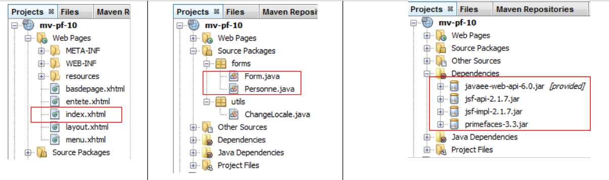 |
该项目的亮点在于：
- 该项目显示的唯一页面 [index.html]，
- 该页面的 [Form.java] 模板以及 [Personne] Bean。
5.13.2. 消息文件
文件 [messages_fr.properties] 内容如下：
app.titre=intro-08
app.titre2=DataTable - 1
submit=Valider
personnes.headers.id=Id
personnes.headers.nom=Nom
personnes.headers.prenom=Pr\u00e9nom
layout.hautdepage=Primefaces en fran\u00e7ais
layout.menu=Menu fran\u00e7ais
layout.basdepage=ISTIA, universit\u00e9 d'Angers
form.langue1=Fran\u00e7ais
form.langue2=Anglais
form.noData=La liste des personnes est vide
form.listePersonnes=Liste de personnes
form.action=Action
5.13.3. 模型
Bean [Personne] 表示一个人：
package forms;
import java.io.Serializable;
public class Personne implements Serializable{
// 数据
private int id;
private String nom;
private String prénom;
// 构建器
public Personne(){
}
public Personne(int id, String nom, String prénom){
this.id=id;
this.nom=nom;
this.prénom=prénom;
}
// toString
public String toString(){
return String.format("Personne[%d,%s,%s]", id,nom,prénom);
}
// getter 和 setter
...
}
页面 [index.xhtml] 的模型是以下 [Form] 类：
package forms;
import java.io.Serializable;
import java.util.ArrayList;
import java.util.List;
import javax.faces.bean.ManagedBean;
import javax.faces.bean.SessionScoped;
@ManagedBean
@SessionScoped
public class Form implements Serializable{
// 模型
private List<Personne> personnes;
private int personneId;
// 构造函数
public Form() {
// 人员列表的初始化
personnes = new ArrayList<Personne>();
personnes.add(new Personne(1, "dupont", "jacques"));
personnes.add(new Personne(2, "durand", "élise"));
personnes.add(new Personne(3, "martin", "jacqueline"));
}
public void retirerPersonne() {
...
}
// 获取器和设置器
...
}
- 第 9-10 行：该 Bean 的作用域为会话，
- 第 18-24 行：构造函数创建了一个包含三人的列表，该列表将在每次请求中持续存在，
- 第 15 行：要从列表中删除的人员编号，
- 第26-28行：删除方法。
5.13.4. 表单
表单如下所示 [index.xhtml]：
<?xml version='1.0' encoding='UTF-8' ?>
<!DOCTYPE html PUBLIC "-//W3C//DTD XHTML 1.0 Transitional//EN" "http://www.w3.org/TR/xhtml1/DTD/xhtml1-transitional.dtd">
<html xmlns="http://www.w3.org/1999/xhtml"
xmlns:h="http://java.sun.com/jsf/html"
xmlns:p="http://primefaces.org/ui"
xmlns:f="http://java.sun.com/jsf/core"
xmlns:ui="http://java.sun.com/jsf/facelets">
<ui:composition template="layout.xhtml">
<ui:define name="contenu">
<h2><h:outputText value="#{msg['app.titre2']}"/></h2>
<p:dataTable value="#{form.personnes}" var="personne" emptyMessage="#{msg['form.noData']}">
<f:facet name="header">
#{msg['form.listePersonnes']}
</f:facet>
<p:column>
<f:facet name="header">
#{msg['personnes.headers.id']}
</f:facet>
#{personne.id}
</p:column>
<p:column>
<f:facet name="header">
#{msg['personnes.headers.nom']}
</f:facet>
#{personne.nom}
</p:column>
<p:column>
<f:facet name="header">
#{msg['personnes.headers.prenom']}
</f:facet>
#{personne.prénom}
</p:column>
<p:column>
<f:facet name="header">
#{msg['form.action']}
</f:facet>
<p:commandLink value="Retirer" action="#{form.retirerPersonne}" update=":formulaire:contenu">
<f:setPropertyActionListener target="#{form.personneId}" value="#{personne.id}"/>
</p:commandLink>
</p:column>
</p:dataTable>
</ui:define>
</ui:composition>
</html>
这将生成如下视图（见下图框内）：
 |
- 第 12 行：生成上文框选的表格。value 属性指定表格显示的集合，此处为模型中的人员列表。emptyMessage 属性为可选。它指定列表为空时显示的消息。默认值为 'no records found'。此处将显示：
 |
- 第 13-15 行：生成标题 [1]，
- 第 16-21 行：生成列 [2]，
- 第 22-27 行：生成列 [3]，
- 第 28-33 行：生成列 [4]，
- 第34-41行：生成列[5]。
链接 [Retirer] 用于从列表中移除某人。行 [38]，即方法 [Form].retirerPersonne 负责执行此操作。 该方法需要知道要移除的人员编号。该编号在第39行提供。第38行使用了action属性。在其他情况下，则使用了actionListener属性。我不确定是否完全理解这两个属性的功能差异。 但在实际使用中，我们注意到由 <setPropertyActionListener> 标签设置的属性是在 action 属性指定的方法执行之前设置的，而 actionListener 属性则并非如此。 简而言之，只要需要向被调用的操作发送参数，就必须使用 action 属性。
移除用户的操作方法如下：
...
@ManagedBean
@SessionScoped
public class Form implements Serializable{
// 模板
private List<Personne> personnes;
private int personneId;
public void retirerPersonne() {
// 正在查找所选人员
int i = 0;
for (Personne personne : personnes) {
// 当前人员 = 选定人员？
if (personne.getId() == personneId) {
// 将当前人员从列表中删除
personnes.remove(i);
// 操作完成
break;
} else {
// 下一位
i++;
}
}
}
...
}
5.14. 示例：mv-pf-11：dataTable - 2
该项目展示了一个表格，其中显示了一组数据，用户可以从中选择一行：
 |
当选中表格中的一行时，系统会在 POST 执行时，将选中行的信息发送至模型。因此，不再需要为每个人设置单独的 [Retirer] 链接。仅需一个链接即可覆盖整个表格。
NetBeans 项目与前一个项目基本相同，仅在表单及其模型方面略有差异。表单 [index.xhtml] 如下所示：
<?xml version='1.0' encoding='UTF-8' ?>
<!DOCTYPE html PUBLIC "-//W3C//DTD XHTML 1.0 Transitional//EN" "http://www.w3.org/TR/xhtml1/DTD/xhtml1-transitional.dtd">
<html xmlns="http://www.w3.org/1999/xhtml"
xmlns:h="http://java.sun.com/jsf/html"
xmlns:p="http://primefaces.org/ui"
xmlns:f="http://java.sun.com/jsf/core"
xmlns:ui="http://java.sun.com/jsf/facelets">
<ui:composition template="layout.xhtml">
<ui:define name="contenu">
<h2><h:outputText value="#{msg['app.titre2']}"/></h2>
<p:dataTable value="#{form.personnes}" var="personne" emptyMessage="#{msg['form.noData']}"
rowKey="#{personne.id}" selection="#{form.personneChoisie}" selectionMode="single">
...
</p:dataTable>
<p:commandLink value="Retirer" action="#{form.retirerPersonne}" update=":formulaire:contenu"/>
</ui:define>
</ui:composition>
</html>
- 第 13 行：selectionMode 属性用于选择 single 或 multiple 选择模式。此处我们选择仅选中一行，
- 第13行：rowkey属性指定了显示元素的一个属性，用于唯一地选中它们。此处，我们选择了所选人员的ID，
- 第13行：selection属性指代模型中的属性，该属性将接收所选人员的引用。借助前面的rowkey属性，服务器端将能够计算出所选人员的引用。 我们尚不清楚具体采用的方法细节。可以推测，系统会按顺序遍历集合，寻找与所选 rowkey 对应的元素。这意味着，如果将 rowkey 与 selection 关联的方法较为复杂，那么该方法便无法使用，
基于上述说明，方法 [Form].retirerPersonne 的演变如下：
...
@ManagedBean
@SessionScoped
public class Form implements Serializable {
// 模板
private List<Personne> personnes;
private Personne personneChoisie;
// 制造商
public Form() {
...
}
public void retirerPersonne() {
// 移除所选人员
personnes.remove(personneChoisie);
}
// 获取器和设置器
...
}
- 第9行：对于每个POST，第9行的引用将初始化为第8行列表中选定人员的引用，
- 在第18行：这简化了删除该人员的操作。我们在前一个示例中进行的搜索是通过标签<dataTable>实现的。
5.15. 示例： mv-pf-12：dataTable - 3
该项目与前一个类似。特别是视图完全相同：

NetBeans 项目与前一个基本相同，仅存在一些细节差异，我们将逐一说明。表单 [index.xhtml] 的变化如下：
...
<ui:composition template="layout.xhtml">
<ui:define name="contenu">
<h2><h:outputText value="#{msg['app.titre2']}"/></h2>
<p:dataTable value="#{form.personnes}" var="personne" emptyMessage="#{msg['form.noData']}"
selectionMode="single" selection="#{form.personneChoisie}">
...
</p:dataTable>
<p:commandLink value="Retirer" action="#{form.retirerPersonne}" update=":formulaire:contenu"/>
</ui:define>
</ui:composition>
</html>
- 第 6 行，rowkey 属性已消失，selection 属性保留。rowkey 和 selection 属性之间的关联现在通过一个类实现。 第 5 行的 value 属性现取值为 PrimeFaces 接口 SelectableDataModel<T> 的一个实例。模型中的 [Form].getPersonnes 方法演变如下：
public DataTableModel getPersonnes() {
return new DataTableModel(personnes);
}
因此，项目中新增了一个 Bean：
 |
该 Bean 如下所示：
package forms;
import java.util.List;
import javax.faces.model.ListDataModel;
import org.primefaces.model.SelectableDataModel;
public class DataTableModel extends ListDataModel<Personne> implements SelectableDataModel<Personne> {
// 构造函数
public DataTableModel() {
}
public DataTableModel(List<Personne> personnes) {
super(personnes);
}
@Override
public Object getRowKey(Personne personne) {
return personne.getId();
}
@Override
public Personne getRowData(String rowKey) {
// 人员列表
List<Personne> personnes = (List<Personne>) getWrappedData();
// 键是一个整数
int key = Integer.parseInt(rowKey);
// 查询选定人员
for (Personne personne : personnes) {
if (personne.getId() == key) {
return personne;
}
}
// 未找到
return null;
}
}
- 第 7 行：该类是接口 SelectableDataModel 的实例。 至少有两个类实现了该接口：ListDataModel（其构造函数接受列表作为参数）和 ArrayDataModel（其构造函数接受数组作为参数）。在此，我们的 Bean 继承自类 ListDataModel，
- 第13-15行：构造函数接受我们管理的联系人列表作为参数。该参数被传递给父类，
- 第18行：方法getRowKey起到了被移除的rowkey属性的作用。它必须返回一个能够唯一标识某人的对象，此处即为该人的ID，
- 第23行：方法 getRowData 需根据 rowkey 返回选定对象。因此，此处需根据 ID 返回对应人员。 由此获得的引用将被赋值给 dataTable 标签中 selection 属性的目标对象，即此处的 selection="#{form.personneChoisie}"。该方法的参数是用户所选对象的 rowkey，以字符串形式呈现，
- 第24-35行：返回接收ID对应人员的引用。该引用将被赋值给模型[Form].personneChoisie。因此，方法[retirerPersonne]保持不变：
public void retirerPersonne() {
// 移除所选人员
personnes.remove(personneChoisie);
}
当 rowkey 和 selection 属性之间的关联并非简单的属性（rowkey）到对象（selection）的关联时，应采用此方法。
5.16. 示例：mv-pf-13：dataTable - 4
该项目与前一个类似，只是删除对象的选定方式有所不同：

上图中，我们可以看到该对象是通过右键点击（上下文菜单）选中的。系统会要求确认删除：
 |
表单 [index.xhtml] 的变化如下：
...
<ui:composition template="layout.xhtml">
<ui:define name="contenu">
<!-- 标题 -->
<h2><h:outputText value="#{msg['app.titre2']}"/></h2>
<!-- 上下文菜单 -->
<p:contextMenu for="personnes">
<p:menuitem value="#{msg['form.supprimer']}" onclick="confirmation.show()"/>
</p:contextMenu>
<!-- 对话框 -->
<p:confirmDialog widgetVar="confirmation" message="#{msg['form.suppression.confirmation']}"
header="#{msg['form.suppression.message']}" severity="alert" >
<p:commandButton value="#{msg['form.supprimer.oui']}" update=":formulaire:contenu" action="#{form.retirerPersonne}" oncomplete="confirmation.hide()"/>
<p:commandButton value="#{msg['form.supprimer.non']}" onclick="confirmation.hide()" type="button" />
</p:confirmDialog>
<!-- dataTable-->
<p:dataTable id="personnes" value="#{form.personnes}" var="personne" emptyMessage="#{msg['form.noData']}"
selection="#{form.personneChoisie}" selectionMode="single">
...
</p:dataTable>
</ui:define>
</ui:composition>
</html>
- 第9-11行：为第21行的dataTable（id属性）定义了一个右键菜单（for属性）。因此，当在人员表格上右键单击时，该右键菜单便会显示出来，
- 第10行：我们的菜单只有一个选项（标签menuItem）。当点击该选项时，onclick属性的JavaScript代码将被执行。 JavaScript 代码 [confirmation.show()] 会显示第 14 行的对话框（属性 widgetVar）。该对话框内容如下：
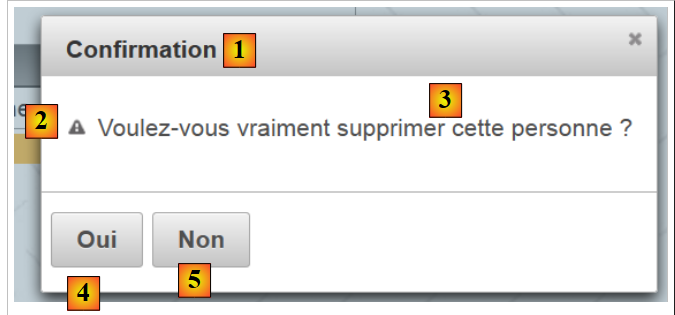 |
- 第 14 行：message 属性显示 [3]，header 属性显示 [1]，severity 属性显示图标 [2]，
- 第16行：显示[4]。点击后，该人员被删除（action属性），随后对话框关闭（oncomplete属性）。oncomplete属性是JavaScript代码，在服务器端操作执行完成后执行，
- 第 17 行：显示 [5]。单击后，对话框关闭，且该人员不会被删除。
5.17. 示例：mv-pf-14：dataTable - 5
该项目展示了在调用 AJAX 后，服务器可返回响应。为此，我们使用了 AJAX 调用的 oncomplete 属性：
 |
[index.xhtml]表单的演变如下：
...
<ui:composition template="layout.xhtml">
<ui:define name="contenu">
...
<!-- 对话框 1 -->
<p:confirmDialog widgetVar="confirmation" ... >
<p:commandButton value="#{msg['form.supprimer.oui']}" update=":formulaire:contenu" action="#{form.retirerPersonne}" oncomplete="handleRequest(xhr, status, args);confirmation.hide()"/>
<p:commandButton ... />
</p:confirmDialog>
<!-- Javascript -->
<script type="text/javascript">
function handleRequest(xhr, status, args) {
// 错误？
if(args.msgErreur) {
alert(args.msgErreur);
}
}
</script>
...
</p:dataTable>
</ui:define>
</ui:composition>
</html>
- 第 7 行：oncomplete 属性调用第 13-18 行的 JavaScript 函数，
- 第13行：方法的签名应为如下形式。args是一个字典，服务器端模型可以对其进行扩展，
- 第15行：检查字典args是否包含名为'msgErreur'的属性。若存在，则将其显示（第16行）。
在模型中，[retirerPersonne]方法的实现如下：
public void retirerPersonne() {
// 随机删除
int i = (int) (Math.random() * 2);
if (i == 0) {
// 移除选定人员
personnes.remove(personneChoisie);
} else {
// 返回错误
String msgErreur = Messages.getMessage(null, "form.msgErreur", null).getSummary();
RequestContext.getCurrentInstance().addCallbackParam("msgErreur", msgErreur);
}
}
- 第 3 行：生成一个随机数 0 或 1，
- 第 4-6 行：若为 0，则将用户选定的人员从人员列表中删除，
- 第 9 行：否则，生成一条国际化错误消息：
form.msgErreur=La personne n'a pu \u00eatre supprim\u00e9e. Veuillez r\u00e9essayer ult\u00e9rieurement.
form.msgErreur_detail=La personne n'a pu \u00eatre supprim\u00e9e. Veuillez r\u00e9essayer ult\u00e9rieurement.
- 第10行：一条复杂的语句，旨在将第9行生成的值msgErreur作为名为'msgErreur'的属性，添加到我们之前提到的args字典中。 随后，该属性会被 [index.xhtml] 的 JavaScript 方法调用：
<!-- JavaScript -->
<script type="text/javascript">
function handleRequest(xhr, status, args) {
// 错误？
if(args.msgErreur) {
alert(args.msgErreur);
}
}
</script>
5.18. 示例：mv-pf-15：工具栏
在此项目中，我们构建了一个工具栏：
 |
工具栏即上图中框选的组件。它是通过以下 XHTML 代码生成的，该代码基于 [index.xhtml]：
<?xml version='1.0' encoding='UTF-8' ?>
<!DOCTYPE html PUBLIC "-//W3C//DTD XHTML 1.0 Transitional//EN" "http://www.w3.org/TR/xhtml1/DTD/xhtml1-transitional.dtd">
<html xmlns="http://www.w3.org/1999/xhtml"
xmlns:h="http://java.sun.com/jsf/html"
xmlns:p="http://primefaces.org/ui"
xmlns:f="http://java.sun.com/jsf/core"
xmlns:ui="http://java.sun.com/jsf/facelets">
<ui:composition template="layout.xhtml">
<ui:define name="contenu">
<!-- 标题 -->
<h2><h:outputText value="#{msg['app.titre2']}"/></h2>
<!-- 工具栏-->
<p:toolbar>
<p:toolbarGroup align="left">
...
</p:toolbarGroup>
<p:toolbarGroup align="right">
...
</p:toolbarGroup>
</p:toolbar>
</ui:define>
</ui:composition>
</html>
- 第15-22行：工具栏，
- 第16-18行：定义工具栏左侧的组件组，
- 第19-21行：同上，用于定义工具栏右侧的组件。
工具栏左侧的组件如下：
<p:toolbarGroup align="left">
<h:outputText value="#{msg['form.etudiant']}"/>
<p:spacer width="50px"/>
<p:selectOneMenu value="#{form.personneId}" effect="fade">
<f:selectItems value="#{form.personnes}" var="personne" itemLabel="#{personne.prénom} #{personne.nom}" itemValue="#{personne.id}"/>
</p:selectOneMenu>
<p:separator/>
<p:commandButton id="delete-personne" icon="ui-icon-trash" action="#{form.supprimerPersonne}" update=":formulaire:contenu"/>
<p:tooltip for="delete-personne" value="#{msg['form.delete.personne']}"/>
</p:toolbarGroup>
它们显示如下视图：
 |
- 第 2 行：显示 [1]，
- 第3行：显示30像素的空格 [2]，
- 第4-6行：显示一个下拉列表，其中包含人员列表 [3],
- 第7行：显示一个分隔符 [4]，
- 第8行：显示一个按钮 [5]，用于删除下拉列表中选中的人员。该按钮带有图标。这些图标分别为 JQuery 和 UI。 其列表可在 URL、[http://jqueryui.com/themeroller/] 和 [6] 中找到：
 |
- 要查看图标名称，只需将鼠标悬停在其上。随后，该名称将用于<commandButton>组件的icon属性中，例如 icon="ui-icon-trash"。 请注意，上文中给定的名称为 .ui-icon-trash，而在 icon, 属性中需去除该名称开头的点
- 第 9 行：为按钮创建一个帮助气泡（for 属性）。当光标悬停在按钮上时，将显示帮助信息 [7]。
与这些组件关联的模板如下：
package forms;
import java.io.Serializable;
import java.util.ArrayList;
import java.util.List;
import javax.faces.bean.ManagedBean;
import javax.faces.bean.SessionScoped;
@ManagedBean
@SessionScoped
public class Form implements Serializable {
// 模板
private List<Personne> personnes;
private int personneId;
// 构造函数
public Form() {
// 人员列表初始化
personnes = new ArrayList<Personne>();
personnes.add(new Personne(1, "dupont", "jacques"));
personnes.add(new Personne(2, "durand", "élise"));
personnes.add(new Personne(3, "martin", "jacqueline"));
}
public void supprimerPersonne() {
// 正在查找所选人员
int i = 0;
for (Personne personne : personnes) {
// 当前人员 = 选定人员？
if (personne.getId() == personneId) {
// 从列表中删除当前人员
personnes.remove(i);
// 操作完成
break;
} else {
// 下一位
i++;
}
}
}
// 获取器和设置器
...
}
工具栏右侧的组件如下：
<p:toolbar>
<p:toolbarGroup align="left">
...
</p:toolbarGroup>
<p:toolbarGroup align="right">
<p:menuButton value="#{msg['form.options']}">
<p:menuitem id="menuitem-francais" value="#{msg['form.francais']}" actionListener="#{changeLocale.setFrenchLocale}" update=":formulaire"/>
<p:menuitem id="menuitem-anglais" value="#{msg['form.anglais']}" actionListener="#{changeLocale.setEnglishLocale}" update=":formulaire"/>
</p:menuButton>
</p:toolbarGroup>
</p:toolbar>
它们显示如下视图：
 |
- 第6-9行：一个菜单按钮。其中包含菜单选项，
- 第7行：将表单切换为法语的选项，
- 第8行：将表单切换为英语的选项。
5.19. 结论
我们已经掌握了将示例应用移植到 Primefaces 所需的知识。虽然我们只介绍了约十五个组件，但该库实际拥有超过 100 个组件。欢迎读者直接访问 Primefaces 官网，查找所需的组件。
5.20. 使用 Eclipse 进行测试
Maven 项目可在示例网站 [1] 上获取：
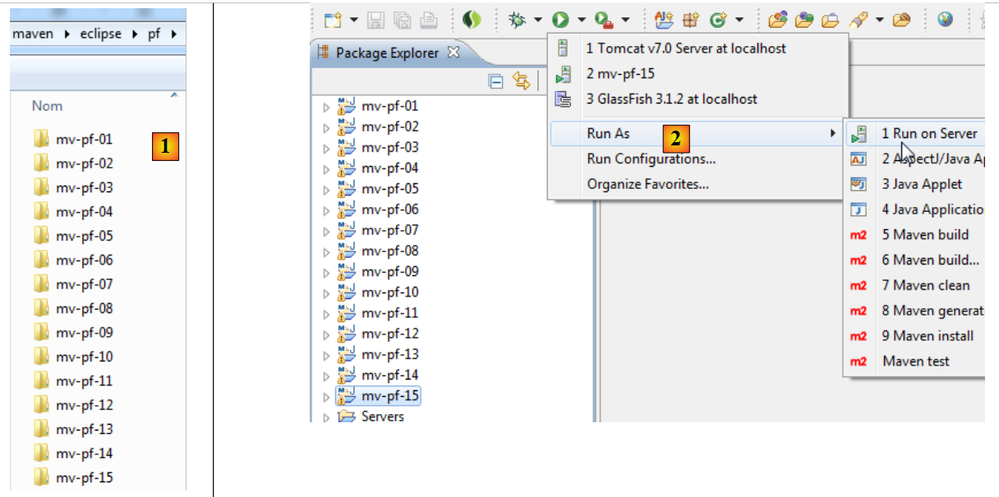 |
导入 Eclipse 后，即可运行 [2]。在 [3] 中选择 Tomcat。随后它们将显示在 Eclipse 的内置浏览器中 [3]。
 |